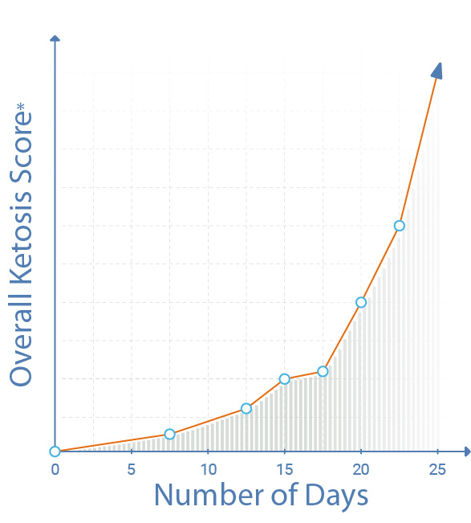

Get Your Keto Advice
Take this quick 2 minute quiz to personalize your plan
-
Weight loss estimation
See what's possible in the next 28 days. -
Keto Macronutrients
Learn exact breakdown of carbs, fats, and protein for your body type. -
Proper Keto nutritional supplements
Avoid banned goods that prevent Ketosis

Are you from Canada?
Sorry, we operate only in Canada. Do you want to change your answer?
How Familiar are you with the Keto Original Slimming Capsules?
Everyone’s looking for a magic bullet that will solve their issues with their weight and appearance, and to many, ketosis sounds like the answer. Ketosis and the keto diet have helped many people lose weight.
In a nutshell: ketosis is a state when the body doesn’t have enough glucose (sugar) to burn for energy, and by inducing this state by limiting carbohydrate intake, the body is supposed to start to burn body fat instead.
Nowadays, however, ketosis isn’t alone. Now there are companies offering nutritional supplements that are supposed to not only support your body during your everyday life, but help your body adjust to burning ketones without any very difficult-to-follow diet.
So we have a basic idea of how ketosis, but how are these supplements supposed to help? First, let’s clarify why this thing is called “ketosis” in the first place. When the body enters ketosis, the molecules that the body converts fat to are called ketones – those are what the body uses for energy and to keep things moving in the body and brain. That’s where keto supplements come in. Keto supplements generally contain three main things: BHB, MCT oil, and ketone salts. This set is supposed to increase fat loss, reduce oxidative stress on cells, help people get to ketosis more quickly.
Ketosis isn’t for everyone, but armed with the knowledge of what it is and what happens during it, you’ll be more informed the next time it comes up.
We rank our products very specifically. You see, you can’t just buy a product that’s great in one area – it has to be amazing in many ways for it to be a great choice. So we have to have more data to advice you the right product.
Have you understood all text above?
What's your level of daily activity?
Which time of the day do you feel most tired (think carefully)?
How often do you experience digestive upsets?
E.g: bloating, cramps, constipation, diarrhea
Your digestion plays an important role in converting food into energy.
How often do you have uncontrollable cravings for specific foods?
Your level of cravings tell us a lot about your metabolic health, and will help decode what your body is trying to tell you.
What are your goals for taking Keto nutritional supplements?
(select as many as you like)
What's Your Height (using the Metric System (centimeters)) and age?
Last Question!
Your Weight
{{load}} %
{{loadText}}
Profile Summary
Achievable Weight
Based on your answers, you could be...
{{answers.goalWeight}} kg
by January 26, 2022
We have determined this by looking at your activity level, metabolic health, and keto compatibility.
Keto Nutrition Requirements
These are your macronutrients - the numbers you need to hit each day to ensure your body enters Ketosis.
Metabolic Age
The metabolic age indicates the age of your body. If your metabolic age is higher than your actual age, it could mean you're experiencing health problems or may need to change your eating and exercising habits.
We have determined that for your dietary profile, metabolic type, and your goals, the Keto Diet is HIGHLY COMPATIBLE.
SEE OUR SPECIAL OFFER FOR YOU